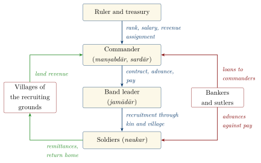

Chapter 17: Soldiers for Hire: The Military Labour Market, c. 1450–1857¶
17.1 Introduction¶
Earlier chapters have followed kings, commanders and campaigns. This chapter follows the men who did the fighting. Between the fifteenth and the mid-nineteenth century most of them were neither hereditary warriors bound to a single lord nor conscripts. They were hired. They came from villages in particular regions, travelled long distances to find employment, served one master and then another, and returned home with savings, wounds or nothing. Dirk Kolff called this world the “military labour market” of Hindustan, and his book Naukar, Rajput and Sepoy (1990) changed the way historians think about Indian armies (Kolff 1990). Jos Gommans extended the argument to the Afghan horse-traders and soldiers of the eighteenth century and to the Mughal army as a whole (Gommans 1995; Gommans 2002). Stewart Gordon and André Wink showed how the same logic worked in the Maratha Deccan (Gordon 1994; Wink 1986). Seema Alavi traced how the East India Company tapped the market and reshaped it (Alavi 1995), and Gommans and Kolff’s reader collects essays on soldiering and weaponry across the whole period from 1000 to 1800 (Gommans and Kolff 2001).
The idea has already appeared in this volume in brief: in the outline of the fifteenth century (Section 8.21), in the discussion of caste and recruitment (Section 13.4), and in the ethics of the mercenary (Section 12.17). Here it is examined in detail. The chapter asks where soldiers came from, how they were recruited and paid, why they changed sides, what they lived on when pay failed, and how the market was absorbed and finally closed by the colonial state. The sepoy armies of the Company and the rising of 1857 are described in Chapter 19; this chapter is concerned with the soldiers who filled them and with the world those soldiers came from.
17.2 Sources for the Soldier’s History¶
The history of ordinary soldiers has to be pieced together from records kept by those who employed, paid and fought them. Persian sources are the richest for the Mughal period. The chronicles describe recruitment, musters, mutinies over pay and changes of side, usually from the point of view of the court; the Āʾīn-i Akbarī gives the statistical survey of the empire’s armed manpower discussed below; and the Mughal newsletters (akhbārāt) and the reports sent by Rajput agents at the imperial court, many of which survive in the archives of the former Rajput states, record day-to-day events such as the arrival of contingents, quarrels over arrears and the desertion of troops. The registers (bahī) of the Rajput courts record grants, service obligations and payments.
For the Maratha state the Peshwa’s records at Pune, written mostly in Marathi in the Modi script, include accounts of troops, horses, pay and debts on a scale unmatched elsewhere in India before the Company; Stewart Gordon and André Wink built their studies on them (Gordon 1993; Wink 1986). From the late eighteenth century the Company’s records — muster rolls, pension and invalid lists, recruiting returns, courts of inquiry into mutinies, and the correspondence of officers and political agents — allow individual soldiers to be followed in a way that earlier records rarely do. Alongside these documents stand literary sources: the heroic ballads of north India and the Deccan (Section 13.15), the Hindi romances in which a prince leaves home in the guise of a wandering ascetic, and a few memoirs, discussed later in this chapter, whose authenticity is itself a historical problem.
Each kind of source has its bias. Court histories treat soldiers as numbers and their protests as disorder; Company records describe them through the categories of caste and loyalty that the Company used to manage them; ballads celebrate heroes and forget the rank and file. Kolff’s achievement was to read these sources together, and against each other, to recover the outlines of a social world that none of them describes directly (Kolff 1990).
17.3 Naukarī: Service as a Way of Life¶
17.3.1 The armed peasantry¶
The basic fact about the countryside of early modern north India is that it was armed. Peasants kept swords, spears, bows and, from the sixteenth century, matchlocks; villages had walls, watchtowers or thorn hedges; and local landholders (zamīndār) maintained retainers who could be called out against rivals, bandits or the revenue officials of the state. Abū’l-Faẓl’s survey of the Mughal provinces, compiled in the 1590s, lists the forces of the zamīndārs district by district. Its totals run to more than four million men, the great majority of them foot-soldiers. Kolff treats this figure, which is certainly incomplete, as a minimum measure of the armed manpower of the countryside (Kolff 1990; Blochmann 1873). Mughal chronicles repeatedly describe districts as “refractory” (mawās): tracts in forest or ravine country whose villages refused revenue and fought the troops sent to collect it.
For a ruler, this armed peasantry was at once a danger and a resource. It made the collection of revenue a permanent small war, and it meant that any rival with money could raise an army quickly. It also meant that the state did not need to train soldiers from scratch. Young men learned to wrestle, to fence with sticks and to use arms in the village akhāṛā (Section 13.7); what they sought from a ruler was employment.
17.3.2 The seasons of service¶
The Persian word naukar means servant, and naukarī service; in the vocabulary of north India it came to mean above all military employment. Kolff describes naukarī as a regular part of the peasant economy. In many families of the eastern Ganges valley, Bundelkhand and Rajasthan, one or more sons left home after the harvest to look for service, while the others worked the land. Some returned for the next sowing; others stayed away for years, sending money home. The campaigning season, which opened after the rains (Section 1.5), was also the season of recruitment. Soldiering in this sense was a form of labour migration, like the later migration of men from the same districts to the jute mills of Calcutta or, under indenture, to the plantations of Mauritius and the Caribbean, and it was governed by similar calculations of wage, risk and distance.
The relationship between a naukar and his master was personal and contractual at once. It was sealed by acceptance of pay and by the ethic of loyalty to the salt (Section 13.8), but both sides knew that it could end. A master who did not pay could expect his men to leave; a soldier who left an employer who had paid him was dishonoured. Most of the time the system worked on this understanding, and the moral language of salt and loyalty served to make a market relationship durable.
17.3.3 An open status¶
Kolff’s most influential argument concerns identity. In the fifteenth and sixteenth centuries, he suggests, the word “Rajput” in Hindustan often described not a closed descent group but a way of life: that of the man who had left his village with his weapons in search of service and fortune. Men of many peasant and pastoral origins became Rajputs by living as soldiers, and Kolff draws attention to the image of the wandering warrior in the popular literature of the period, which has much in common with the image of the ascetic who has left home. Only in the seventeenth century, under Mughal patronage, did a more exclusive “Rajput great tradition” take shape, centred on the courts of Rajasthan, their genealogies and their bards, which tied Rajput status to descent from a recognised lineage (Kolff 1990).
The argument has been debated. Critics have pointed out that lineage and clan mattered in Rajput identity long before the Mughals, as the early medieval inscriptions and later genealogies show (Talbot 2016). But the central point, that military service could change a man’s social standing and that martial identities were made in history, is now widely accepted, and it is supported by the histories of the Marathas, Jats and other communities summarised in Section 13.5. The same was true of the identity “Afghan”, which in Hindustan could be acquired by men who joined Afghan bands and adopted their dress and loyalties.
17.4 The Recruiting Grounds of Hindustan¶
Soldiers could come from anywhere, but some regions supplied far more than others. They were usually regions of dense peasant population, limited opportunities for advancement at home, and a tradition of service that made the road to employment familiar.
17.4.1 Bhojpur and the Purbiyas¶
The most famous of these regions lay in the eastern Ganges valley: the country of Awadh, the districts around Banaras, and above all Bhojpur, the region of western Bihar between the Ganges and the Son. To soldiers and rulers in Malwa, Rajasthan and the Deccan these men were pūrbiyā, “easterners”, and the word became almost a synonym for hired infantry. The dominant landholding lineage of Bhojpur, the Ujjainiya Rajputs, who traced their descent from the Paramāras of Ujjain, were at once local lords, occasional rebels against the Afghan and Mughal rulers of Bihar, and suppliers of fighting men to them; Kolff uses their history to show how a lineage could prosper by managing the flow of soldiers out of its territory (Kolff 1990). In the eighteenth century, matchlockmen from the town of Baksar (Buxar) on the Ganges were so common in the armies of Bengal and Bihar that “Buxerry” (from baksariyā, “man of Baksar”) became a common word for a matchlockman or armed guard in the English of the Company’s servants.
17.4.2 The Purbiyas in Malwa¶
The power of these soldiers is shown most dramatically by events in Malwa in the early sixteenth century. Sultan Maḥmūd II Khaljī of Malwa came to rely on a Purbiya chief, Medinī Rāy, and his followers to secure his throne against his own nobles. For some years Medinī Rāy’s men dominated the sultanate, until the sultan escaped to Gujarat and was restored with Gujarati troops in 1518, after which the Purbiyas were driven out of the capital at Mandu with great slaughter. Medinī Rāy held the fortress of Chanderi under the protection of Rāṇā Sāṅgā of Mewar and joined Sāṅgā against Bābur at Khanua in 1527. Bābur besieged Chanderi in January 1528; his memoirs describe the storming of the fort and the defenders’ last stand (Thackston 1996). The episode shows a body of hired soldiers acting as a political force in its own right, able to make and unmake rulers, and it shows how quickly the fortunes of such a force could turn.
17.4.3 Bundelkhand¶
South of the Yamuna, the rugged country of Bundelkhand was another nursery of soldiers. Its Bundela chiefs, based at Orchha from the 1530s, built their power by recruiting and leading the men of the region, and by placing them at the disposal of the Mughals when it suited them. Bīr Siṅgh Deo, who killed Akbar’s minister Abū’l-Faẓl in 1602 at the instigation of Prince Salīm, was rewarded when Salīm became the emperor Jahāṅgīr, and used his rank and revenues to build the palaces of Orchha and Datia. His successors alternated between high Mughal service and rebellion; the rebel Campat Rāy and his son Chhatrasāl (Section 9.18) drew on the same reservoir of fighting men (Kolff 1990). Bundelkhand matchlockmen served in armies across north and central India well into the nineteenth century.
17.4.4 Afghans and Rohillas¶
Afghan soldiers formed a market of their own. The Lodī sultans of Delhi (1451–1526) drew Afghans into Hindustan with offers of land and employment, and Afghan histories written in Mughal times describe how their clans settled in the towns and villages of the Ganges plain. The career of Sher Shāh Sūr shows how this world worked. Born Farīd, the son of a minor Afghan holder of revenue rights at Sasaram in Bihar, he made his name in the service of an Afghan ruler of Bihar, gathered a following of Afghan soldiers by paying them promptly and treating them as comrades, and used that following to defeat Humāyūn in 1539–40. His biographer ʿAbbās Khān Sarwānī, writing for Akbar, dwells on his care in recruitment, in the inspection of men and horses, and in regular payment (Richards 1993). After the Mughal restoration the Afghans lost their empire but not their place in the market: they served the Mughals, the Deccan sultans and later the Marathas.
In the eighteenth century, Gommans has argued, Afghan horse-traders, soldiers and settlers formed an “Indo-Afghan” network that linked the horse markets of the north-west with settlements in Rohilkhand and Farrukhabad and with the armies of the Durrānī kings of Afghanistan (Gommans 1995). The Rohilla state of ʿAlī Muḥammad Khān (d. 1748) and his successors grew out of this network; its leaders were at once horse-dealers, landholders, military contractors and rulers. Its last independent ruler, Ḥāfiẓ Raḥmat Khān, was killed in 1774 fighting the combined army of Awadh and the East India Company.
17.4.5 The Punjab misls¶
In the Punjab of the mid-eighteenth century the market took a form shaped by religion as well as by pay. As Mughal authority collapsed under the Afghan invasions, Sikh fighting bands (jathā) gathered around leaders of proven ability and, from 1748, acted together in the Dal Khālsā, a loose federation that met at Amritsar to decide on common action (Section 9.20). The bands that crystallised out of this federation, the misls, were not hereditary armies. A horseman, usually a Jat peasant who had taken initiation into the Khalsa, chose the leader (sardār) under whom he would serve and could, in principle, leave him for another; he supplied his own horse and arms; and he received a share of the plunder and, as the misls settled down, of the land they conquered. Historians describe this system of shares in conquered territory as pattīdārī (Grewal 1990).
The misls paid for themselves in part through rākhī, “protection”: villages and towns placed themselves under a misl’s protection in return for a share of their produce, traditionally a fifth, and the misl undertook to defend them against other raiders and against the Afghan armies. Rākhī was at once a tax, a contract and a form of political allegiance, and it allowed the misls to turn the protection business of the armed countryside into territorial power. Purnima Dhavan has shown how, in the same decades, Sikh writers worked to define the conduct of the Khalsa warrior, so that the misl horseman was bound not only by pay and plunder but by a code of religious discipline (Dhavan 2011). When Ranjit Singh united the Punjab, he absorbed the misl cavalry into the ghoṛcaṛhā horse of his kingdom and built a regular army alongside it (Chapter 18).
17.5 The Deccan and the South¶
17.5.1 Bārgīr and śiledār¶
In the Deccan the market took a different form, because the dominant arm was light cavalry. The Maratha armies distinguished two kinds of trooper. The bārgīr rode a horse and carried arms supplied by the state or by his commander and received a lower wage; the śiledār (from Persian silāḥdār, “bearer of arms”) owned his horse and equipment and hired them out together with his own service at a higher rate. The household cavalry of the Peshwas and the great chiefs (pāgā) consisted of bārgīrs; the larger part of a Maratha army consisted of śiledārs and their leaders, who were in effect small contractors. A horse was capital, and its loss could reduce a śiledār to a bārgīr or to a foot-soldier. Stewart Gordon has shown how a successful śiledār family could rise, over two or three generations, from village service to command and to the holding of revenue assignments (Gordon 1993, 1994). The Bengali word bargī, used for the Maratha raiders of the 1740s, comes from bārgīr.
17.5.2 Ḥabshīs and Arabs¶
The Deccan market also drew men from overseas. Ethiopian and other East African soldiers (ḥabshī), many of whom had come to India as slaves, served the Bahmanī and later sultanates, and some rose to the highest commands (Section 9.15). From the second half of the eighteenth century Arab soldiers, many of them from the Hadhramaut in southern Arabia, became prominent in the armies of the Nizam, the Maratha chiefs and the Gaikwads of Baroda. They had a reputation for steadiness in the defence of forts, and Arab garrisons in Khandesh were among the last to resist the Company in 1818. In Hyderabad, Arab commanders (jamādār) lent money to the state and to nobles and took the revenues of districts as security, becoming a political force that the Nizam’s ministers and the British Resident had to reckon with in the early nineteenth century. Their descendants remain a distinct community in the city, notably in the quarter called Barkas.
17.5.3 Peons, poligars and forest archers¶
In the south, the infantry of the Vijayanagara successor states and of the poligars (pāḷaiyakkārar) consisted largely of armed retainers known in English records as “peons”, drawn from communities such as the Kaḷḷar, Maṟavar and Bedar (Section 13.5). Kerala’s Nāyar soldiers stood somewhat apart, being bound by birth and kaḷari training to particular lords, but they too could be hired.
Across central and western India the forest and hill peoples — Bhils, Kolis, Mīṇās, Gonds and others — served as archers, scouts and guards, and also raided the settled country when they were not employed. Their relationship with the Rajput states was old and close; the arms of the Mewar state show a Bhil archer beside a Rajput warrior as supporters of the shield. The East India Company drew them into its own forces in the 1820s: the Khandesh Bhil Corps raised by James Outram in 1825 was intended both to employ the Bhils and to end their raiding. In this way the colonial state used the logic of the market against those who had lived from it.
17.6 Contractors, Credit and Arrears¶
Armies were assembled through a chain of contracts (Figure 17.1). At the top, the ruler granted a commander a rank, a salary and, very often, the revenue of a territory from which to pay it. The commander raised his contingent not man by man but through band leaders, called jamādārs (from jamʿ, a body of men) or by local titles, who brought followers recruited from their own villages and kin and negotiated their pay. The ordinary soldier therefore served the band leader who had recruited him, through him the commander, and through the commander the ruler. Each link was a bargain, and each could break.

Pay was the heart of the system, and it was chronically late. In the Mughal empire the salary attached to a rank was a nominal figure; the revenue assignments (jāgīr) from which it was paid often yielded less. By the reign of Shāh Jahān the administration had recognised this formally, grading assignments by the number of months’ pay they could be expected to produce in a year and reducing the commander’s obligations accordingly (Athar Ali 1966; Richards 1993). A commander who received less than he expected passed the shortfall down the chain. Soldiers were paid in instalments, often months in arrears, and settled accounts at the end of a campaign, when deductions were made for advances, for horses lost or for absence.
Credit filled the gaps. Soldiers borrowed from the merchants and sutlers who followed the camp; commanders borrowed from bankers against the revenue of their assignments; rulers borrowed against future collections. In the Maratha state of the eighteenth century the great commanders were permanently in debt, and the bankers of Pune and other cities were indispensable partners in war (Gordon 1993; Wink 1986). C. A. Bayly has shown how in north India the same commercial families that financed the armies of the successor states later transferred their services to the Company (Bayly 1983). The military labour market was thus also a credit market, and the solvency of an army depended as much on the confidence of bankers as on the skill of its commanders.
When pay failed, soldiers had recognised ways of protesting. They might refuse to march, surround their commander’s tent, hold him or his officials until arrears were paid, or seize the revenues of the district in which they were quartered. Irvine collected many such cases from the Persian histories of the later Mughal period, some involving the most senior nobles of the empire (Irvine 1903). These were not mutinies in the European sense, aimed at overturning authority, but forms of collective bargaining within a system that both sides understood. They became dangerous when a rival offered the soldiers better terms.
17.7 Fitna: Changing Sides as Politics¶
Indian battles were often decided by defection, and Western observers, from the Portuguese to the British, took this as evidence of treachery or of a lack of national feeling. André Wink has proposed a different reading. Taking the Persian word fitna, “sedition” or “discord”, he argues that in the political culture of the Deccan and of Mughal India the winning over of an opponent’s followers was a normal and expected technique of statecraft, to be preferred to costly battle wherever possible (Wink 1986). Rulers expanded by drawing rival lords and their soldiers into their own service with offers of rank, land and pay; the enemy’s army was a pool of potential employees.
Seen from the soldier’s side, fitna was the political face of the labour market. A commander who brought his contingent over to the winning side, at the right moment, did what his men expected of him: he secured their future employment. A ruler who could not pay could not count on loyalty; one who could pay well could count on attracting soldiers from his enemies. The Arthaśāstra had already treated the winning over of the enemy’s disaffected officers and subjects, by gifts and dissension, as a central method of statecraft (Section 7.2), and the Mughal practice of granting generous terms to those who surrendered followed the same logic (Section 9.4). The decisive defections at Plassey and in the Anglo-Sikh wars (Chapter 19) belong to this pattern, although by then the party offering better terms was the Company.
17.8 Military Entrepreneurs¶
At the top of the market stood men whose business was war: commanders who raised, paid and led their own forces and hired them to rulers, and who could become rulers themselves. Historians call them military entrepreneurs, borrowing a term from the study of the Thirty Years’ War in Europe, where colonels and generals likewise raised regiments on credit and sold their services to princes. Two careers of the eighteenth century show how such men operated in India.
Muḥammad Khān Bangash (c. 1665–1743) began as the leader of a band of Afghan soldiers who hired themselves to local chiefs in Bundelkhand. He joined the prince Farrukhsiyar in the war of succession of 1712–13, was rewarded with rank, and founded the town of Farrukhabad, named after his patron, as the seat of his family. As a Mughal governor of Allahabad and later of Malwa he fought the Bundelas and the Marathas; in 1729 he was himself besieged at Jaitpur in Bundelkhand, when the Peshwa Bājīrāv I came to the aid of Chhatrasāl. His followers were Afghans of many clans, bound to him by pay and by the shared identity of the Afghan soldier, and his descendants ruled Farrukhabad as nawabs until the Company absorbed their territory. Gommans treats the Bangash state as a characteristic product of the Indo-Afghan world of horse-trading, soldiering and town-founding (Gommans 1995).
Anūpgiri Gosāīn, known by his Mughal title Himmat Bahādur (d. 1804), was the most successful of the armed ascetic commanders whose general history is outlined in Section 13.6. With his brother Umrāogiri he led a force of Nāgā ascetic soldiers, together with cavalry and artillery, which served in turn the Nawab of Awadh Shujāʿ al-Daula, the Mughal court in Delhi, Mahādjī Shinde and the Maratha commanders in Bundelkhand. In 1803, as the Company advanced against the Marathas, he came to terms with the British and helped them take Bundelkhand, receiving lands in return. William Pinch, who reconstructed his career, uses it to show that the ascetic regiments were part of the ordinary military economy of their time, recruited, paid and bargained for like any other troops (Pinch 2006). Bayly has shown that the Gosāīn orders were also important traders and bankers in the cities of the middle Ganges valley, so that the same networks could supply soldiers, credit and goods (Bayly 1983).
Such men were indispensable and dangerous. A ruler who hired them gained an army at once, without the expense of raising it; he also gained a partner with interests of his own, who would make terms with a stronger rival if the balance turned. The Company’s own success in India owed much to its ability to buy such partners, and then to dispense with them once its own armies were sufficient.
17.9 Plunder and Unpaid Armies¶
17.9.1 Booty and the soldier’s share¶
Every army plundered, and in many armies plunder was understood as part of the soldier’s reward. Islamic law reserved a fifth of the booty taken in war for the ruler and assigned the rest to the soldiers who took it, and the chronicles of the Delhi sultans and the Mughals record the distribution of horses, cloth, cash and captives after victories; the taking of captives is discussed in Section 12.8. Indian rulers of every tradition allowed their troops to sack a town taken by storm. Plunder was also a way of paying soldiers when the treasury was empty, and armies that could not be paid were set to plunder the enemy’s territory, or anyone’s.
The burden fell on the peasantry, who were also the families from whom soldiers came. A village that supplied men to one army could be sacked by another, or by the same army in a different season. Kolff observes that the line between the soldier and the bandit was thin: the same armed men could be employed, disbanded and turned to raiding within a year, and the same villages could shelter raiders and suffer from them.
17.9.2 The bargī raids in Bengal¶
The raids of the Maratha cavalry of the Bhosales of Nagpur into Bengal in the 1740s show how plunder could become a strategy. Between 1742 and 1751 Maratha forces, at first under the general Bhāskar Paṇḍit, entered western Bengal almost every year to extract tribute from the Nawab ʿAlīvardī Khān, plundering the countryside to force him to pay. ʿAlīvardī had Bhāskar Paṇḍit and his officers killed at a meeting in 1744, but the raids continued until the Nawab ceded the revenue of Orissa and agreed an annual payment in 1751. The raids left a deep mark on Bengali memory (Section 12.9); the poet Gaṅgārām’s Mahārāṣṭra Purāṇa (1751) describes the flight of villagers before the raiders and the cruelties they suffered. The episode shows that the mobile warfare celebrated in Maratha memory as ganimī kāvā (Section 9.16) was experienced very differently by those on whose land it was fought.
17.9.3 The Pindārīs¶
The Pindārīs were the military labour market in its most extreme form. In the eighteenth century the term described irregular horsemen who accompanied the Maratha armies without pay, living by plunder in enemy territory and giving a share to the chiefs who protected them; there were bands attached to Shinde and to Holkar. After the Company’s victories of 1803–05 broke up the large Maratha armies, many disbanded soldiers joined the Pindārī bands, which grew into large independent forces under leaders such as Cītū, Karīm Khān and Wāṣil Muḥammad. Their raids reached deep into central India and, in 1816, into the Company’s territories on the east coast.
The Company’s campaign against them in 1817–18, which merged with the Third Anglo-Maratha War (Chapter 19), was one of the largest it ever mounted. Its methods are revealing. Armies converged on the Pindārī bases in Malwa from several directions, while political officers negotiated with the leaders. Karīm Khān surrendered and was given land in Gorakhpur; Cītū fled into the jungle and was killed there by a tiger in 1819. Amīr Khān, a Pathan commander whose large army of infantry and artillery had served Holkar and plundered Rajasthan, was recognised as Nawab of Tonk in return for disbanding most of his troops and surrendering his guns, and the state of Tonk survived until 1948. Gordon has argued that the Pindārīs should be understood not simply as robbers but as one end of a spectrum of military entrepreneurship that included the founders of states (Gordon 1994); Amīr Khān’s career, from freebooter to prince, illustrates his point.
17.10 From Naukar to Sepoy¶
17.10.1 Recruiting the Hindustani sepoy¶
The East India Company entered the market as one employer among many, and it recruited in the same places and in the same ways. Its early Bengal battalions, raised after 1757, included Muslims and Hindus of many castes, recruited partly from soldiers who had served the nawabs. From the 1770s, however, the Bengal army recruited more and more from the high-caste peasantry of Awadh and Bhojpur, the Brahmins and Rajputs whom it came to regard as the ideal soldiers. Seema Alavi has shown that this choice was deliberate. The Company constructed a model of the “Hindustani” sepoy, tall, high-caste and respectable, and made concessions to secure his loyalty: it accommodated his rules of diet and purity, granted pensions and leave, and even used its Resident at the Nawab’s court in Lucknow to press the sepoys’ family claims in the courts of Awadh (Alavi 1995). The sepoy became a man of standing in his village, and service in the Company’s army became the most desirable form of naukarī.
The Madras and Bombay armies recruited more widely, and they were less marked by the high-caste culture of the Bengal regiments. The Madras army of the late eighteenth century drew on Telugu and Tamil peasant communities, on Muslims of the Carnatic and on castes regarded as low, including Paraiyars, many of them Christians; its sepoys lived with their families in the regimental lines and were often accompanied by them on campaign. The Bombay army recruited Marathas and Kuṇbīs from the Konkan and the Deccan, Muslims, Purbiyas, Mahārs — whose part in the defence of Koregaon is described in Section 19.4 — and members of the Bene Israel Jewish community of the Konkan, several of whom rose to be Indian officers. For communities excluded from the dignity of arms by caste, service in these armies offered pay, rank and a measure of social standing, which is why the later exclusion of Mahārs and similar groups from recruitment, as the army reorganised itself in the late nineteenth century around the “martial races” (Section 19.9), was felt as a loss. Mahār leaders petitioned against it in the 1890s, and B. R. Ambedkar, whose father had served as an Indian officer in the Bombay army, later made the Mahārs’ military record part of his case against untouchability (Omissi 1994; Cohen 1971). The differences between the three armies also mattered in 1857, when the Bengal army rose and most of the Madras and Bombay regiments did not.
17.10.2 Pay, batta and the bargain¶
What distinguished the Company from its rivals was not the kind of soldier it hired but the regularity with which it paid him. Pay was monthly and usually on time; there were pensions for the wounded and for long service; and the families of men killed in service could receive support. The Company’s army thus offered what the older market rarely could: security. In return it demanded continuous service, drill and obedience to rules that the soldier had not negotiated.
Disputes arose where these rules touched pay or caste. The most frequent concerned batta, the extra allowance paid for service in the field or outside the Company’s own territories. When an allowance was withdrawn — as happened when a territory in which troops were serving was annexed and became “home” service — the soldiers saw a breach of the bargain. In 1844, after the annexation of Sindh, several Bengal regiments refused to march there when the Sindh allowance was ended, and one, the 34th Native Infantry, was disbanded. Service overseas, which threatened the caste status of high-caste soldiers, was another source of conflict, from Barrackpore in 1824 to the General Service Enlistment Act of 1856 (Section 19.7). In each case the soldiers’ protest followed the older pattern of collective bargaining; what was new was the Company’s insistence on treating it as mutiny.
17.10.3 The silladar cavalry¶
In one arm the older market survived inside the Company’s army almost unchanged. The regular cavalry of the Company was expensive, and from the early nineteenth century it relied increasingly on irregular regiments raised on the silāḥdār (in British spelling “silladar”) system, the same system as that of the Maratha śiledār (Section 17.5). The trooper joined with his own horse, or paid for one provided by the regiment, and with his own arms and equipment; he received a higher monthly wage than an infantry sepoy, out of which he maintained horse and kit. A man who could not afford a horse might ride one owned by another (often an officer or a better-off trooper) and share his pay with its owner. The regiments were commanded by a small number of British officers and run in large part by their Indian officers, who often recruited from their own families and districts.
The best-known of these regiments was raised by James Skinner (1778–1841), the son of a Scottish officer and a Rajput mother, who had served in the Maratha brigades until the war of 1803 forced British subjects to leave (Section 18.3). He brought a body of horsemen over to the Company and commanded them for the rest of his life; “Skinner’s Horse”, known from their coats as the Yellow Boys, became a permanent regiment. Skinner himself, who wrote in Persian and built St James’s Church in Delhi, embodied the mixed world of the late eighteenth-century military market. The silladar system lasted in the Indian cavalry until the early twentieth century, long after the infantry had become a fully state-equipped force, and it shows how closely the colonial army remained tied to the institutions of the market it had replaced.
17.10.4 The sepoy’s voice¶
Ordinary soldiers of the Indian armies left few records of their own before the letters of the First World War. The best-known exception is a problem in itself. From Sepoy to Subedar, published in English in 1873 and translated, according to its title page, by Lieutenant-Colonel James Norgate from the Hindi memoirs of a Brahmin named Sītārām Pāṇḍe, describes a career in the Bengal army from 1812 to 1860, including the Pindārī campaign, the Afghan and Sikh wars and the rising of 1857 (Lunt 1970). Its accounts of recruitment, of the village’s pride in a son in the Company’s service, of the dangers of caste pollution and of the growing distance between sepoys and British officers have often been quoted. But no Hindi original has been found, and some historians regard the text as substantially the work of its British editor. It is best read as a mid-Victorian account of what a loyal sepoy was thought to feel, which may preserve genuine experience but cannot be taken as an unmediated voice.
17.11 The Closing of the Market¶
Kolff ends his account in 1850, and the date is apt. Over the first half of the nineteenth century the Company destroyed the conditions that had sustained the military labour market. It defeated the states that had employed soldiers in large numbers, and imposed treaties that limited the armies of those that survived (Chapter 18); it disbanded the Maratha armies and the Pindārīs; it absorbed some of the disbanded men into local corps and contingents paid for by Indian rulers; and it extended its own revenue and police administration into the countryside, where it began, slowly and incompletely, to disarm the villages. Large numbers of soldiers found employment in the remaining independent army of the Sikh kingdom, which recruited Purbiyas alongside Punjabis, until it too was defeated in 1846–49.
The rising of 1857 was in part the last great act of the market. Its core was the mutiny of the Bengal army, whose sepoys came from the old recruiting grounds of Awadh and Bhojpur; it was joined by the armed retainers of the landholders of Awadh, by disbanded soldiers of the annexed kingdom, and by contingents raised by the Company in the princely states, such as the Gwalior Contingent. Eric Stokes’s study of the rising in the countryside, published after his death under the title The Peasant Armed, showed how the military connections of particular districts shaped their response (Stokes 1986). Rudrangshu Mukherjee has shown how in Awadh the landholders and their followers fought together against the British (Mukherjee 1984). Kunwar Siṅgh, the elderly Ujjainiya chief of Jagdishpur in Bhojpur, who led a long campaign in Bihar and the eastern Ganges valley in 1857–58, was the heir of the lineage whose history Kolff had used to explain the military labour market.
After 1857 the Crown’s army turned away from these recruiting grounds (Section 19.9), and the Arms Act of 1878 (Section 19.12) completed the disarming of the countryside. The men of Bhojpur and Awadh continued to migrate for work, but now to the docks, mills and plantations of the empire rather than to the camps of rival kings.
The market did not vanish entirely; it was channelled. The princely states kept irregular forces, and in Hyderabad Arab and other irregular troops remained part of the Nizam’s establishment into the twentieth century. Armed watchmen and retainers continued to be hired by landholders and merchants. And the empire created new outlets for the old skills. Sikh and Punjabi Muslim men, recruited through the same networks of family and village that had once supplied the misls and the Lahore army, served as police and guards in Hong Kong, Singapore, the Malay states and East Africa from the later nineteenth century, and men from the hills of Nepal served the Company and the Crown as Gurkhas from 1815 onwards (Section 18.9). In this sense the history of Indian soldiering for hire continued well beyond 1857, but within limits set by the colonial state rather than by the competition of many employers that had defined the market at its height.
17.12 Assessment¶
The military labour market is one of the most important ideas in the modern study of Indian warfare, because it explains so much that older accounts treated as failures of character. Large armies could be raised quickly because the countryside was full of armed men seeking employment. Battles were decided by defection because soldiers and their commanders were contractors whose first concern was their next employer. Armies plundered because they were unpaid, and they were unpaid because the revenue that should have paid them passed through a long chain of assignments and loans. The same features made Indian armies flexible, cheap to raise and dangerous to the states that raised them.
The idea also has limits. It describes Hindustan and the Deccan better than Kerala, Assam or the far south, where service was more often tied to birth or to compulsory obligation (Section 9.12). It can make loyalty seem merely a matter of pay, whereas the sources show soldiers dying for lords, lineages and faiths when it would have been profitable to do otherwise. And it should not be romanticised: the open market in soldiers was also a market in violence, whose costs were borne by peasants in their fields. What it makes clear is that the sepoy of the Company was not a new creation but the latest form of the north Indian naukar, and that the colonial army was built from the labour, skills and expectations of a much older military world.
Further Reading¶
-
Kolff (1990): the classic study of the military labour market of Hindustan.
-
Gommans (1995): the Afghan horse-traders, soldiers and states of the eighteenth century.
-
Gordon (1994) and Wink (1986): soldiers, marauders and the politics of the Maratha Deccan.
-
Alavi (1995): the Company’s recruitment and management of the Hindustani sepoy.
-
Stokes (1986) and Mukherjee (1984): the rural dimension of 1857.